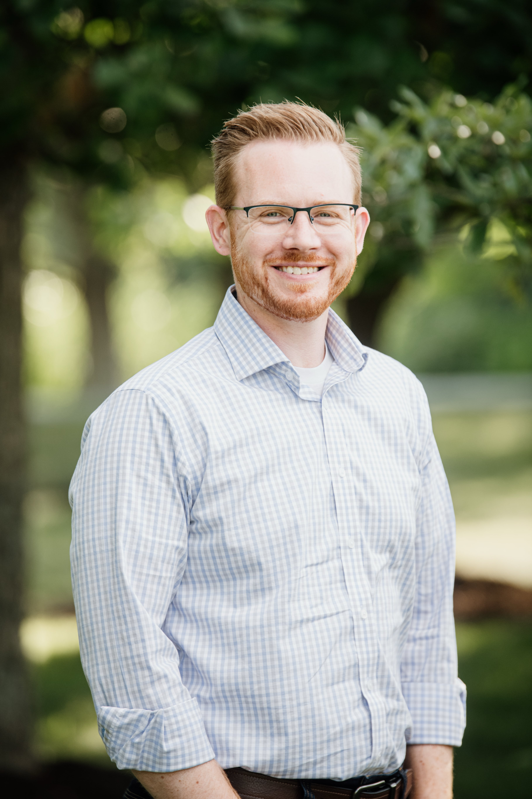
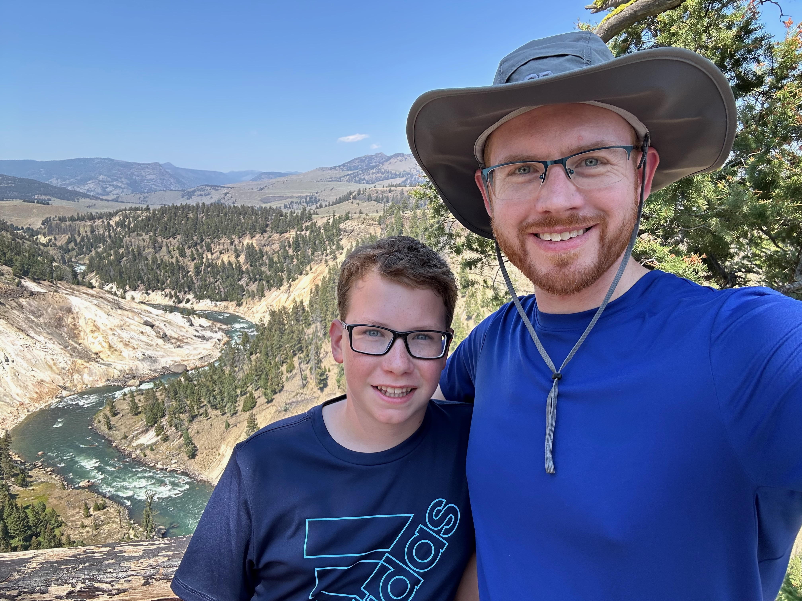

About
A bit about me

The hardest design problem in most organizations isn't the interface. It's making sure the team knows what matters and why.
I've spent 15+ years leading design across environments that couldn't be more different — from a small startup that got acquired by Zillow, to a design consultancy where I ran both the design and engineering teams, to a mid-size SaaS company where I built a UX team and led a front-end modernization effort, to Fortune 50 retailers like Kroger and Home Depot where the org chart alone could fill a whiteboard. The pattern is always the same: when a team has clarity about what they're solving and who they're solving it for, they do extraordinary work. When they don't, even talented people spin.
I think of leadership as service — to the broader mission and to the people doing the work. My job is to understand the big picture well enough to communicate the intent clearly, then trust my team to bring their own creativity and judgment to the problem. I'd rather align people on where we're going than prescribe how to get there. That's how leadership scales — especially inside the kind of large, complex organizations where I've done my best work.
That said, I care deeply about the details. I came up as a designer, and the craft still matters to me. If something feels off, I'll ask the questions that help the team see it too. I don't think caring about quality and empowering your team are in tension — they reinforce each other when the intent is clear.
How I Lead
My leadership principles
Create Clarity
I cut through organizational complexity to help teams focus on what matters most. In large, matrixed environments, the ability to communicate a clear direction is often more valuable than any individual design decision.
Lead by Intent
I believe in aligning teams on the destination, not dictating the route. When people understand and share your intent, they bring their own creativity and problem-solving to get there. That's how leadership scales.
Sweat the Details
Empowering a team doesn't mean accepting mediocre output. I stay close enough to the craft to know when something feels off, and I'll ask the questions that help the team find a better answer.
Speaking & Engagements
Talks & appearances
- 2024 Placeholder Talk Title Conference / Event Name
- 2019 The Hidden Power of Metaphor Midwest UX
- 2018 Midwest UX
Outside of Work
Beyond the screen
I love the outdoors! Most of my hobbies involve spending time outside hiking, backpacking, biking, or gardening. This photo is from 2024 when my son and I took a special trip to Yellowstone National Park for his birthday. My daughter and I go backpacking together at least once a year. Gardening is newer hobby for me, so I'm always learning and getting excited about new things to plant.
Indoors, you'll often find me playing board games. I'm a total nerd about board games, in part because I love how they bring people together without screens, and in part because I love the way a great game combines game mechanics and beautiful artwork to create an immersive and shared experience.

Let's connect
Whether you're looking for a design leader or just want to talk shop, I'd love to hear from you.